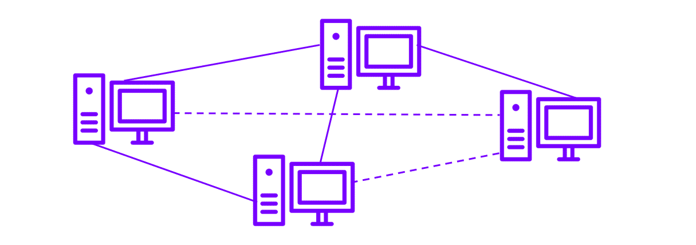
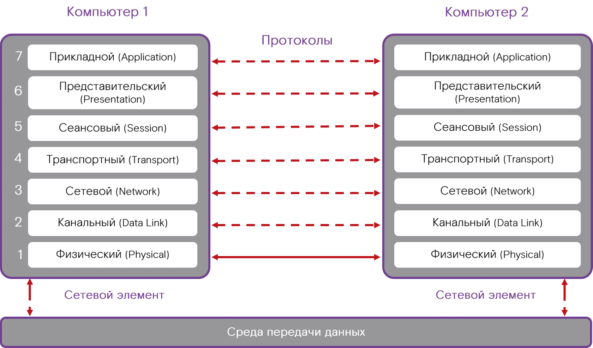
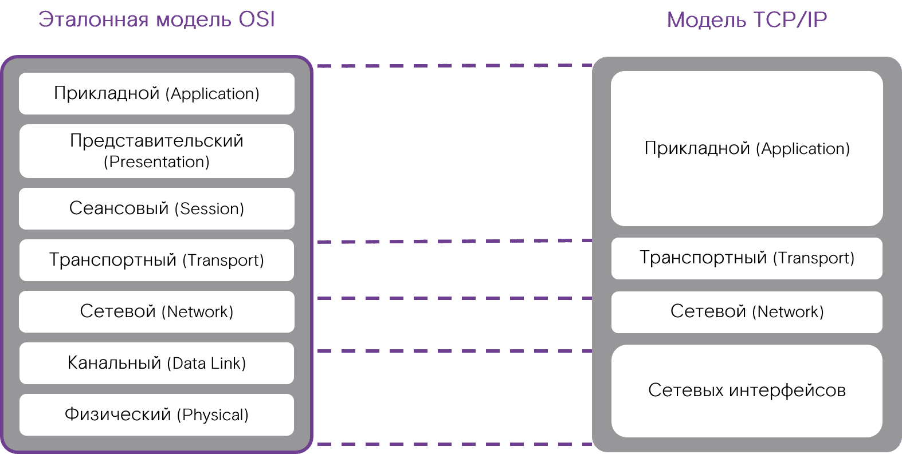
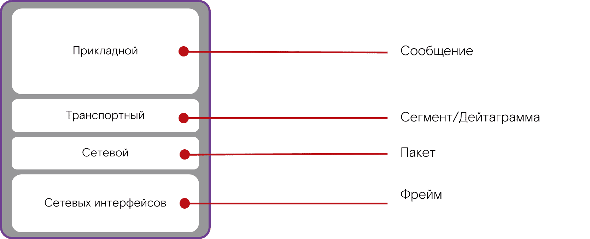
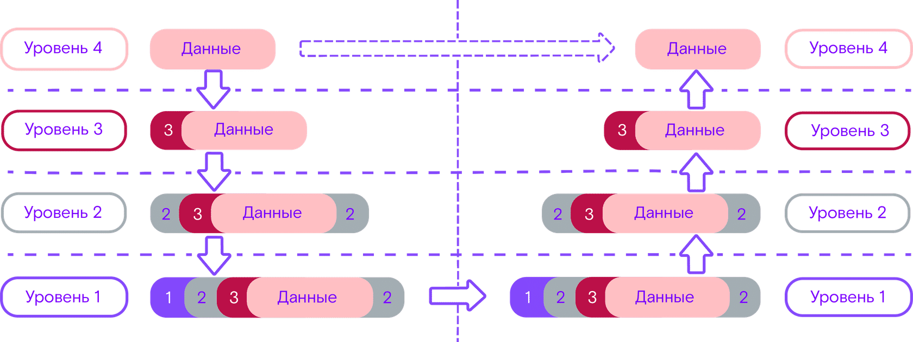
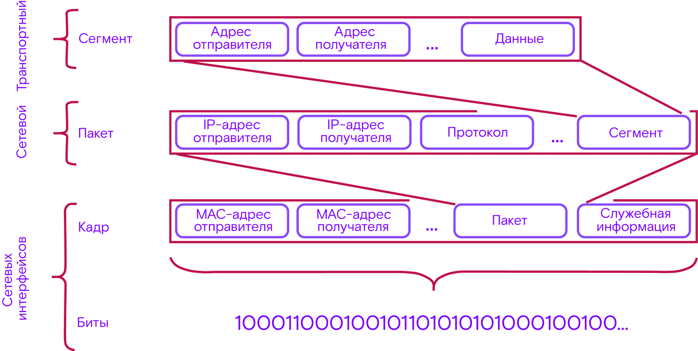
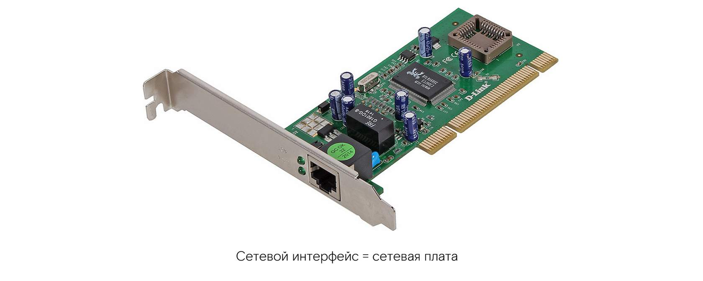
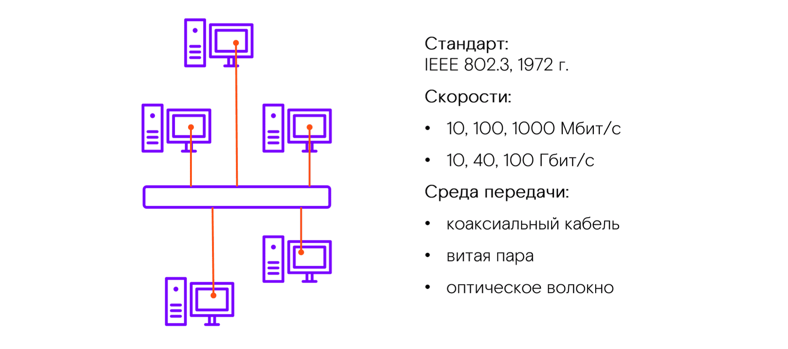

Книги
- NmapМануал
Компьютерные сети
Компьютерная сеть — это объединение двух или более компьютеров. Их соединяют между собой для передачи данных.
Компьютерная сеть функционирует по определенным правилам. Описание принципов, по которым работает сеть, называют сетевой моделью.
Сегодня существует масса сетевых моделей, однако одна из них считается эталонной. Это модель OSI , и на ее основе строится большинство других сетевых моделей.
Модель OSI состоит из уровней сетевого взаимодействия. Всего в OSI 7 таких уровней.
Уровни сети: стандарт OSI
Модель TCP/IP
На базе эталонной модели OSI строится модель TCP/IP. Она имеет 4 уровня: некоторые из уровней модели OSI объединяются в один.
Посмотри, как из модели OSI образуется TCP/IP.
Уровни и протоколы
На каждом уровне сетевой модели действуют свои правила передачи информации.
Протоколы — это определенные правила приема и передачи информации между двумя или несколькими устройствами.
Протоколы определяют:
- * Каким образом будет кодироваться информация
- * По каким маршрутам пойдет информация
- * Сообщение какого размера можно передавать
- * Сообщение какого размера можно передавать
Синхронизация
Для быстрой и правильной обработки данных в сети, важно, чтобы процессы были синхронизированы.
Для оптимальной синхронизации учитывается несколько параметров:
- Скорость передачи
- Время ожидание ответа
- Режим доступа к передаче данных
Режим доступа к среде передачи данных
Синхронизация работы между двумя компьютерами может происходить в режиме «дуплекс» или «полудуплекс».
Примером полудуплекса может служить разговор по рации: чтобы перейти из режима «прием» в режим «передача», необходимо нажать кнопку переключения.
А телефонная связь иллюстрирует режим дуплекса: обе стороны могут передавать информацию одновременно.
Типы информации
нформация в сетях передается порциями — PDU (Protocol Data Unit). На каждом из уровней сетевой модели эти порции имеют свой формат и называются по-своему.
Форматы PDU
В каждом из PDU есть три ключевых поля:
- Адрес отправителя
- Адрес получателя
- Сам пакет с данными
Инкапсуляция и декапсуляция
Пакет данных передается от более высокого уровня сетевой модели к более низкому и обратно с помощью механизма инкапсуляции. Рассмотрим это на примере.
- Мы пишем письмо и кладем его в конверт.
- Почтальон собирает все конверты в мешки.
- Мешки загружаются в контейнер, а контейнер грузится в почтовый вагон.
- По мере движения поезда из пункта А в Б контейнер распаковывают и распределяют мешки по пунктам назначения.
- Письма из мешков попадают к адресатам, которые открывают конверт и достают письмо.
Шаги 1–3 — это инкапсуляция.
Шаги 4 и 5 — обратный процесс, декапсуляция.
Посмотри, как принцип инкапсуляции и декапсуляции реализуется в сетевой модели:
А так выглядит инкапсуляция пакета с данными в сетевой модели TCP/IP: сегменты входят в пакеты, пакеты входят в кадры, которые потом кодируются.
Не правда ли, чем-то напоминает сказку: игла в яйце, яйцо в утке, утка в сундуке и так далее?
Итак основных модели для построения сетей это OSI И TCP/IP
Выыоды
- Эталонной моделью для построения сети является 7-уровневая модель OSI.
- Модель TCP/IP строится на модели OSI и состоит из 4 ключевых уровней: сетевых интерфейсов, сетевого, транспортного и прикладного. Уровень сетевых интерфейсов объединил физический и канальный уровни эталонной модели OSI.
- Информация в компьютерных сетях передается не хаотично, а по правилам, которые задаются сетевыми протоколами.
- Каждый протокол определяет, какой тип данных и в каком формате передать, как кодировать информацию, какого размера сообщения можно отправить.
- Информация передается с уровня на уровень с помощью механизма инкапсуляции, при котором блоки данных с уровней более низкого порядка включаются в блоки данных более высокого порядка и наоборот.
2. Сетевые интерфейсы
Интерфейс – широкое понятие. Это связующий элемент между двумя объектами некой системы. Интерфейс позволяет объектам взаимодействовать друг с другом
В качестве интерфейса может выступать любое устройство для взаимодействия. Вокруг нас есть множество примеров:
Типы интерфейсов
Самый нижний уровень TCP/IP — уровень сетевых интерфейсов (канальный и физический уровни). Интерфейсы позволяют компьютерам взаимодействовать между собой.
Интерфейсы здесь, как правило, представлены в виде сетевых плат.
Сетевые интерфейсы в IP-сетях сейчас работают на базе технологии Ethernet. Однако эта технология была не первой.
Ethernet
Ethernet (от англ. ether — эфир и network — сеть) — семейство технологий пакетной передачи данных. Принцип работы этой технологии: все, передаваемое одним узлом, одновременно принимается всеми остальными.
В локальной сети Ethernet сначала применяли стандартный коаксиальный кабель двух видов (толстый и тонкий) и витые пары. Сейчас коаксиальный кабель уже не используется из-за своей неэффективности: он слишком медленный.
Технология Ethernet Технология Ethernet описывает уровень сетевых интерфейсов модели TCP/IP. Напомним, что этот уровень объединяет в себе физический и канальный уровни